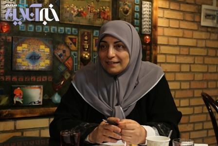

پذيرش > اخبار > عدم فرصتهای مدیریتی یکسان بین زنان و مردان؛ رئیسجمهورشدن زنان را به تأخیر انداخته (...)


 عدم فرصتهای مدیریتی یکسان بین زنان و مردان؛ رئیسجمهورشدن زنان را به تأخیر انداخته است عدم فرصتهای مدیریتی یکسان بین زنان و مردان؛ رئیسجمهورشدن زنان را به تأخیر انداخته است
28 اسفند 1391 - - نسخه قابل چاپ
زنان پرس: رعایت حقوق زنان در ابعاد مادی و معنوی، از موضوعات مهمی میباشد که اصل ۲۱ قانون اساسی تضمین و احیای آن را وظیفه دولت دانسته و از جمله این حقوق، حق انتخابشدن است، یعنی زنان واجد شرایط نیز حق دارند مانند مردان، برای تصدی مناصب سیاسی و اجتماعی، داوطلب شوند که از جمله این مناصب، منصب ریاستجمهوریست.
در هر حال با توجه به مسئولیتها، اختیارات و شرایطی که در قانون اساسی برای ریاستجمهور پیشبینی شده، این سؤال مطرح میشود که آیا ریاست جمهوری ویژه مردان است و زنان شایستگی تصدی این سمت را ندارند یا تفاوتی از لحاظ جنسیت وجود ندارد و زنان نیز حق دارند برای تصدی این سمت اقدام نمایند؟
در این خصوص دیدگاه یکسانی وجود ندارد، جمعی صلاحیت زنان را برای ریاستجمهوی نفی و البته برخی اثبات مینمایند و هر یک برای ادعای خود دلایلی مطرح میکنند.
چندی پیش از سوی یکی از محافلی که دغدغه زنان را بر دوش دارد پیشنهاد کاندیداشدن وزیر سابق بهداشت و درمان کشورمان مطرح شد البته اینکه این پیشنهاد از سوی این بانوی فعال عرصه بهداشت پذیرفته شد و یا خیر؛ مسئلهای نیست که ما تلاش کردهایم در این گزارش به آن بپردازیم. درواقع آنچه حائز اهمیت است بطن این پیشنهاد است که فرصت رئیسجمهورشدن زنان را مورد چالش قرار داده است.
در واقع در قانون اساسی مردبودن در ردیف شرایط رییسجمهور ذکر نشده، یا زن بودن به عنوان مانعی برای ریاست جمهوری بیان نشده است، در اصل ۱۱۵ قانون اساسی شرایط رییسجمهور بیان شده اما در بین شرایط مذکور در این اصل، شرط مرد بودن دیده نمیشود. البته ناگفته نماند اثبات صلاحیت زنان برای ریاستجمهوری مبتنی بر این است که واژه «رجال» در این اصل ناظر به جنسیت نباشد، آنطور که قائلین به عدم صلاحیت زنان برای ریاست جمهوری به این واژه استناد میکنند.
آیا زن ایرانی توانایی رئیسجمهور شدن را دارد؟
برای پاسخ به این سؤال و همچنین بررسی علل مطرحکردن پیشنهاد کاندیدشدن زنان برای سمت ریاستجمهوری از سوی تشکل جامعه زینب (س) با توران ولیمراد مسئول کمیته تحقیقات و مطالعات جامعه زینب (س) و دبیر ائتلاف اسلامی زنان به گفت وگو نشستیم.
ولیمراد ابتدا در خصوص این پیشنهاد بیان داشت: در واقع جامعه زینب (س) به دنبال رفع خلأهای قانونی و یا اشکالات فرهنگی در حوزه زنان است، از ابتدای انقلاب اسلامی در ارتباط با زنان ما با نگرشهای سنتی و فرهنگی مواجه هستیم که استدلال اسلامی پشت آن نیست و بیشتر با فرهنگ و سنت جامعه مردسالار همراه بوده که با اسلام هیچ تناسبی ندارد.
وی ادامه داد: جامعه زینب (س) خود را موظف میداند در جهت رفع این نوع نگرش و کمرنگکردن آن قدمهای اساسی بردارد و در جهت پررنگتر کردن نگرش اسلامی حرکت کند.
شکستن سقفهای شیشهای
دبیر ائتلاف اسلامی زنان اضافه کرد: ما ۴ سال پیش در ائتلاف اسلامی زنان بیانیهای را که مطالبات زنان از رئیسجمهور بود و به نوعی شامل شکستن سقفهای شیشه ای، مخالفت با کمی حضور زنان در سمتهای بالای کشوری و … میشد را تهیه و ارائه دادیم.
ولیمراد تصریح کرد: همچنین برای اجراییکردن مفاد این بیانیه با کاندیداهای ریاستجمهوری نشستهایی برگزار کردیم و مطالبات خود را عنوان نمودیم و هر کدام از آنها وعده وزیر زن را به ما دادند و سرانجام در دولت آقای احمدینژاد خانم دکتر وحید دستجردی که از کاندیداهای پیشنهادی ما برای سمت وزارت بودند پذیرفته شدند و ما این راه را ادامه خواهیم داد.
پستهای مدیریتی مردانه است یا برای مردان است؛ نگرشیست غلط
عضو جامعه زینب (س) در ادامه ضمن اشاره به این مطلب که در نگرش اسلامی برای حضور زنان در نقشهای مدیریتی بالا هیچ ممانعتی وجود ندارد اظهار داشت: جامعه زینب (س) دکتر دستجردی را معرفی کردند تا نشان دهند نگرشی که معتقد است پستهای مدیریتی مردانه است یا برای مردان است نگرشیست، غلط و باید کنار گذاشته شود و ایشان با گذراندن یک دوره اجرایی نشان دادند که از توانمندیهای بالایی برخوردارند و از آنجا که سابقه وزارت داشتند ما به ایشان پیشنهاد کاندیدشدن برای ریاست جمهوری را دادیم که البته نپذیرفتند.
پست ریاست جمهوری خاص مردان نیست/ تنها باید توان مدیریتی داشت
وی خاطر نشان کرد: هدف جامعه زینب از این پیشنهاد این بود که مطرح کند پست ریاست جمهوری خاص مردان نیست، این پست مدیریتیست و مدیریت اجرایی کشور است که زن و مرد ندارد و تنها باید توان مدیریتی داشت.
دبیر ائتلاف اسلامی اضافه کرد: در واقع طبق شاخصهایی که در قانون اساسی آمده، زن و مرد بودن برای این سمت تفاوتی نمیکند و تفسیر ما از کلمه رجال سیاسی و مذهبی مانند بسیاری از صاحبنظران دیگر این است که منظور انسان است که در مرد و زن بودنش تفاوتی نیست. ما معتقدیم اگر منظور مرد بود باید این کلمه قید میشد در واقع در مخالفت با قید کلمه مرد بوده که از رجال سیاسی استفاده شده است.
نگرش ما زنگرایی و زنمحوری نیست
ولیمراد تصریح کرد: باید بگویم نگرش ما زنگرایی و زنمحوری یعنی نگرشی فمنیستی نیست. نگاه ما نگاهی اسلامیست که به لحاظ انسانی تفاوتی بین زن و مرد نیست. زن و مرد هر دو انسانند و انسان نیز پتانسیل دارد تا تواناییهای خود را به اجرا درآورد.
نباید زن را به دلیل زنبودن از فرصتها دور کرد
وی ادامه داد: همانطور که پیش از این هم به آن اشاره کردم نباید به دوران جاهلیت بازگشت و زن را به دلیل زنبودن از فرصتهای دور کرد و زن و مرد باید هر دو از فرصتها استفاده کنند و این امر باید در پستهای مدیریتی، تصمیمسازی و تصمیمگیری تعمیم داده شود.
عضو جامعه زینب (س) ضمن اشاره به اینکه مردان فرصتهای مدیریتی را بین خود تقسیم کردهاند در چند سال اخیر و حتی میتوان گفت از بعد از انقلاب اسلامی بیان داشت: در واقع آنها با این عملکرد فرصتهای مدیریتی را از زنان گرفتند و در نتیجه زنان نیز فرصت نشاندادن توانمندیهای خود را نداشتهاند و حال تصور میشود که آنها این توانایی را ندارند در صورتیکه فرصتی به آنها داده نشده است.
ابتدای انقلاب زنان نخبه انگشتشمار بودند اما اکنون ما در چه شرایطی هستیم؟
ولیمراد اظهار داشت: اگر در ابتدای انقلاب ما با تعداد کمی از زنان نخبه و تحصیلکرده مواجه بودیم در شرایط کنونی و با توجه به اینکه انقلاب اسلامی برای زنان ما امکان تحصیل علم و کسب تجربه را فراهم کرده است دیگر نمیتوان گفت تعداد زنان توانمند ما بسیار کم است تنها باید به آنها فرصت داده شود تا نشان دهند که توان اداره و اجرای امور را دارند.
دبیر ائتلاف اسلامی زنان ادامه داد: سهم زنان ما در مراکز تصمیمگیری و تصمیمسازی ها چقدر است؟ ما میبینیم که در دانشگاهها، معاونتها، ادارهکل ها و در واقع پستهای کلان کشوری زنان کمتری حضور دارند گرچه ما در بخش خصوصی شاهد حضور توانمند زنان هستیم اما فرصتهای ملی و دولتی به زنان کمتر داده شده است.
زنان زیر ذرهبین هستند/ نیمی از جمعیت از رقابت کنار گذاشته شده است
وی خاطرنشان کرد: ما میشنویم که مطرح میشود باید برای فلان پست مدیریتی سابقه کاری در آن زمینه داشت اما اگر قدری عمیقتر به برخی پستهای مدیریتی که به مردان داده شده نگاه کنیم مشاهده میکنیم که این سابقه در نظر گرفته نشده است در صورتی که زنان زیر ذرهبین هستند و برای آنها این امر بسیار متفاوت است.
ولیمراد در پایان ضمن اشاره به این مطلب که ما با پیشنهادی که دادیم دو هدف را دنبال میکردیم افزود: نخست بحث نظری این مسئله بود، اینکه به لحاظ اسلامی هیچ محدودیتی برای ورود زنان به ردههای بالای مدیریتی وجود ندارد و ملک سبایی که در قرآن آمده الگوییست که ما به آن اذعان داریم و اگر به اسم اسلام این تفاوت اعمال شود میتوان گفت به اسلام جفا شده است.
وی خاطر نشان کرد: دیگر اینکه سی و چهار سال از انقلاب گذشته است و به برکت همین انقلاب زنان ما در بسیاری از عرصهها پیشرفت کردهاند و توانمند شدهاند و متأسفانه تناسبی بین توانمندشدن زنان و حضور آنها در بخشهای تصمیمگیری دیده نمیشود و باید تلاش کنیم این مرز برداشته شود. در رقابتهای مدیریتی که در کشور وجود دارد نیمی از جمعیت که زنان هستند کنار گذاشته شده و همین مسئله موجب شده است که مردم کمتر با زنان نخبه و توانمند آشنا شوند و در نتیجه ما شاهد هستیم که مثلاً در انتخابات مجلس شورای اسلامی حضور نمایندگان زن کمرنگتر است و این چیزیست که ما به دنبال رفع آن هستیم.
ارسال به
بالاترین
،
توییتر
،
فریندفید
،
فیسبوک
در همين بخش :
 پروین ذبیحی برنده جایزه حقوق بشری سازمان غيردولتى اتريشى سودويند شد پروین ذبیحی برنده جایزه حقوق بشری سازمان غيردولتى اتريشى سودويند شد
پخش کارت پستال و بروشور در روز جهانی زن در تهران
تمدید زمان برای امضای بیانیهی جمعی از فعالان زن به مناسبت هشت مارس
مجوزی که در نطفه خفه شد
بیش از 2000 امضا در اعتراض به تبعیض های آموزشی به مجلس تحویل داده شد
ديگر بخش ها :
طرح یک میلیون امضا
|
مقالات
|
سایت نوشته ها
|
اخبار
|
گزارش كمپين
|
گفت و گو
|
علیه سکوت
|
كوچه به كوچه
|
نامه های شما
|
گزارش ویژه
|
گفتگو با اعضا
|
ویژه سالگرد کمپین
|
تصویر برابری
|
دل آرام علی
|
تریبون
|
مقالات
|
تاریخ شفاهی
|
خارج از چارچوب
|
کتابخانه
|
درباره کمپین
|
کمپین در شهرها
|
کمپین در بند
|
صدای تغییر
|
ویژه 22 خرداد
|
لایحه حمایت از خانواده
|
گالری
|
عشا مومنی
|
امیر یعقوبعلی
|
خدیجه مقدم
|
راحله عسگری زاده و نسیم خسروی
|
پروین اردلان،جلوه جواهری، مریم حسین خواه، ناهید کشاورز
|
زینب پیغمبرزاده
|
سعیده امین، سارا ایمانیان، محبوبه حسین زاده، ناهید کشاورز و همایون نامی
|
احترام شادفر
|
نسیم سرابندی زاده،فاطمه دهدشتی
|
وبلاگ مهمان
|
پرونده خرم آباد
|
دستگیری ها
|
مریم مالک
|
پرستو اللهیاری
|
مهرنوش اعتمادی
|
سمیه رشیدی
|
Other Languages
|
همراهان
|
«فراخوان کمپین ده روز با بهاره هدایت»
| English
|